Ryan Bartoli
Index | Projects | Activities | ResumeHobbies
Web Design
In my spare time I like to design websites for fun and to provide an interface for me to access information on the go.
World of Warcraft Farming guide: At the moment I'm playing Classic World of Warcraft and set up a guide for myself to obtain a certain rare item which takes months to obtain.
World of Warcraft Guild: Thought I would put together a small site for my friends to all get updated on raiding stuff.
Bright Bots: A previous game development project that I plan to make a full webpage on covering the development process.
Interns InCorperated: A goofy take on megacorperations in a scifi universe.
Pathfinder character sheet: A side project to record my character sheet for pathfinder dungeons and dragons.
In my spare time I like to design websites for fun and to provide an interface for me to access information on the go.
World of Warcraft Farming guide: At the moment I'm playing Classic World of Warcraft and set up a guide for myself to obtain a certain rare item which takes months to obtain.
World of Warcraft Guild: Thought I would put together a small site for my friends to all get updated on raiding stuff.
Bright Bots: A previous game development project that I plan to make a full webpage on covering the development process.
Interns InCorperated: A goofy take on megacorperations in a scifi universe.
Pathfinder character sheet: A side project to record my character sheet for pathfinder dungeons and dragons.
Listening to music
I've been told I have an eclectic taste in music.
Often I play music to get me into a certain creative mood.
Highlights include:
Playlist: Metal for metal's sake
Contents: Historial & Mythological Metal
Playlist: Ambient Chill
Contents: Sad & Temprate pop/chill
Playlist: Programming Background music
Contents: Action-packed chill/focus
Playlist: Pegan Folk Music
Contents: Dark Age Ambience
I've been told I have an eclectic taste in music.
Often I play music to get me into a certain creative mood.
Highlights include:
Playlist: Metal for metal's sake
Contents: Historial & Mythological Metal
Playlist: Ambient Chill
Contents: Sad & Temprate pop/chill
Playlist: Programming Background music
Contents: Action-packed chill/focus
Playlist: Pegan Folk Music
Contents: Dark Age Ambience
Drawing cool stuff
One of my ultimate pasttimes is drawing. Helps me express creativity when all I got are the basics. MSPaint is my prefered software for simplicity, but I have used GIMP and Photoshop to make other stuff.
While seeking to design my own campaign in college I went to great depths to outline maps for all my areas. For this one I went with a great forest with swamps, sandy patches, and major preservation of wildlife even though several civilized cultures live here.

This map outlines a coastal city I wanted to be a focal point of the campaign, designed with the idea that this culture does not specialize in navial ventures and has had to make compromises with the land to build the city.

For a friend's campaign I designed the town he had difficulty describing to us in words, highlighting several main homes in a series of forked road paths, surrounded by a big wooden fence and supportive of several vegitable farms.
If you want an idea of how much I was working with initially, he called this state Country A with this being town Teseria after a woman who lives here.

Inspiration for this drawing came from playing Mechanicius where my dungeon delving tech priests delved into mysterious ancient tombs with larger-than-life ambience.
This is the Hal'ral tomb, an ancient order of magic wielding Dwarven knights in my D&D setting who were entombed in their mountain crypt along side their magical secrets. An evil cult is at work to uncover these secrets and the heroes are here to thwart their plans.
When I setup a region for my player's first session I did not anticipate additional players wished to join, especially with totally different backgrounds. To accommodate and further flesh out my world, I drew out a swamp that a traveling gnome druid player could be in along side his wood elf monk companion.
In my secret historian lab I hypothesised what would happen if in 55ad the Romans never invaded Gaul (Iron Age areas of modern day France) and the various supersitious beliefs of the Celts were real in this fantasy setting simply called "Gual".
This setting emphasizes the idea that the ideals of the individual and the connection they have to their home were what made them strong in a meta-physical sense, amped up in a world where drudic rituals actually can change the weather or bring famin upon your house's enemies.
I got as far as to design the cultures and sub cultures of the various indigenious Gaulic tribes, each themed around an element of nature, often represented by the flags they wear and the land they inhabit.
One of my ultimate pasttimes is drawing. Helps me express creativity when all I got are the basics. MSPaint is my prefered software for simplicity, but I have used GIMP and Photoshop to make other stuff.
While seeking to design my own campaign in college I went to great depths to outline maps for all my areas. For this one I went with a great forest with swamps, sandy patches, and major preservation of wildlife even though several civilized cultures live here.
This map outlines a coastal city I wanted to be a focal point of the campaign, designed with the idea that this culture does not specialize in navial ventures and has had to make compromises with the land to build the city.
For a friend's campaign I designed the town he had difficulty describing to us in words, highlighting several main homes in a series of forked road paths, surrounded by a big wooden fence and supportive of several vegitable farms.
If you want an idea of how much I was working with initially, he called this state Country A with this being town Teseria after a woman who lives here.
Inspiration for this drawing came from playing Mechanicius where my dungeon delving tech priests delved into mysterious ancient tombs with larger-than-life ambience.
This is the Hal'ral tomb, an ancient order of magic wielding Dwarven knights in my D&D setting who were entombed in their mountain crypt along side their magical secrets. An evil cult is at work to uncover these secrets and the heroes are here to thwart their plans.
When I setup a region for my player's first session I did not anticipate additional players wished to join, especially with totally different backgrounds. To accommodate and further flesh out my world, I drew out a swamp that a traveling gnome druid player could be in along side his wood elf monk companion.
In my secret historian lab I hypothesised what would happen if in 55ad the Romans never invaded Gaul (Iron Age areas of modern day France) and the various supersitious beliefs of the Celts were real in this fantasy setting simply called "Gual".
This setting emphasizes the idea that the ideals of the individual and the connection they have to their home were what made them strong in a meta-physical sense, amped up in a world where drudic rituals actually can change the weather or bring famin upon your house's enemies.
I got as far as to design the cultures and sub cultures of the various indigenious Gaulic tribes, each themed around an element of nature, often represented by the flags they wear and the land they inhabit.
Studing History
History is my favorite subject of study. I nearly accidentially got a History minor in college due to how much history courses I've taken out of pure interest.
Often the way I like to passively relax is to watch history documentaries on youtube. If left to my own devices, I could probably watch these all day.
Because its a passion of mine, I got some channels I can recommend.
History Civilis has perhaps the best playlist of Pre-Empire Roman History I've seen accumulated in one place on the internet.
History Civilis' battle videos have a simple animation but to me is extremely effective at conveying the tatics and pitfalls of many battles throughout history. I enjoyed them enough to give them their own place here too.
Kings and Generals creates amazing animated historial documentries discussing ancient warfare of early to late antiquity.
I think it goes without saying that History Buffs are a favorite. Nick Hoagies reviewes historically themed movies to compare them to the history they are based on. His most influential reviews to me were on the movie Waterloo and Gladator, which swayed me to go watch them.
A special mention goes to the Tv Documentary Series The Revolution which thoroughly covers the American Revolution, with a huge chuck of details left out of typical American history classes. Watched in one sitting and was thoroughly entertained.
An additional special mention goes to the History Documentary Secrets of The Aegean Apocalypse that discuss a popular theory on what cataclysm caused the end of the Brozen Age.
Even if the suggested theory is proven incorrect, I'm deeply fascinated with how so many powerful empires fell apart in such a short period of time. Probably was aliens.
History is my favorite subject of study. I nearly accidentially got a History minor in college due to how much history courses I've taken out of pure interest.
Often the way I like to passively relax is to watch history documentaries on youtube. If left to my own devices, I could probably watch these all day.
Because its a passion of mine, I got some channels I can recommend.
History Civilis has perhaps the best playlist of Pre-Empire Roman History I've seen accumulated in one place on the internet.
History Civilis' battle videos have a simple animation but to me is extremely effective at conveying the tatics and pitfalls of many battles throughout history. I enjoyed them enough to give them their own place here too.
Kings and Generals creates amazing animated historial documentries discussing ancient warfare of early to late antiquity.
I think it goes without saying that History Buffs are a favorite. Nick Hoagies reviewes historically themed movies to compare them to the history they are based on. His most influential reviews to me were on the movie Waterloo and Gladator, which swayed me to go watch them.
A special mention goes to the Tv Documentary Series The Revolution which thoroughly covers the American Revolution, with a huge chuck of details left out of typical American history classes. Watched in one sitting and was thoroughly entertained.
An additional special mention goes to the History Documentary Secrets of The Aegean Apocalypse that discuss a popular theory on what cataclysm caused the end of the Brozen Age.
Even if the suggested theory is proven incorrect, I'm deeply fascinated with how so many powerful empires fell apart in such a short period of time. Probably was aliens.
Crafting my Dungeons and Dragons Setting

My world encompasses a mixing pot of fantasy races thrown together by a mythos of ancient conflicts and colamities started by started by races that still exist in a declining state.
Ancient Penra
The ancient status quo pertained between Dragon and Giant-kind, the prime races of Penra, who ruled over the 'lesser races' and ran their own mighty empires.
A major event in Penra's history was the total collapse of the realm Evergreen, home of the Fey, split by its ruling Elven Empire Magical Civil War that resulted in magical tares between the Marial Realm and the Evergreen.
Being the world where the naturalistic energies of universe come from, these tares had rapturous consequences on the Material Realm, taring some continents asunder, enhancing the ferociousness of its inhabitance's biology, and corrupting the natural cycle of nature.
For this misdeed, the Fey banished Elven-kind from the Evergreen, made worst off when brought under the dominion of the Dragonic Empire.
In the years without wars to rage, the Dragons experimented with their slaves and produced half breeds to serve in their armies.
But no period of time is ever truely peaceful. Amiss this tranqual time, man and dwarf warred as proxies for Giant-kind against the Elves and Dragonborn of the Dragons.
How the great conflict eventually arose remains a mystery, though the powerkeg to such a war was inevitable to spark.
Eventually these mighty empires were brought low in their war, and were brought to near exinction when their unified slaves rose up, fortified by astral powers of foreign gods.
Devistated, the giants lost their kingdom and the many dragon flights were forced into hiding.
Since then, the state of Penra's fate has been left in the hands of morals.

Early concept art of the local sites in the starting town of Rateduza.
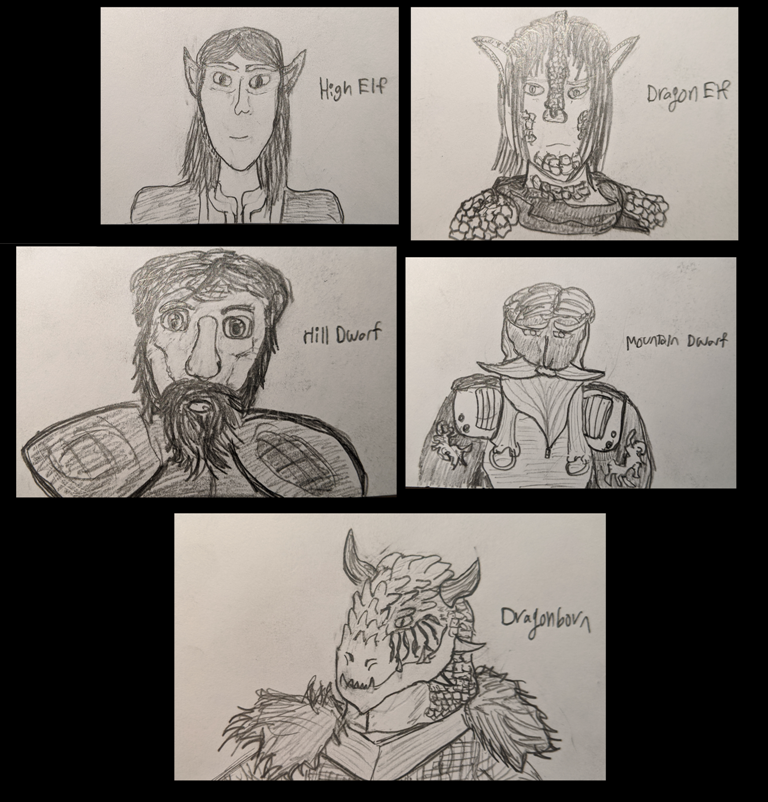Visual aid for my friends new to D&D.
Our 2020 game

Here are our heroes (from the center to the right) Kreyg, the Half-Elf Lore Bard, and Kriv, the Dragonborn Paladin.
They are accompanied by Hans, the Cleric of Pelor, and Arthur Ward, the Captain of the Rateduza town guard.
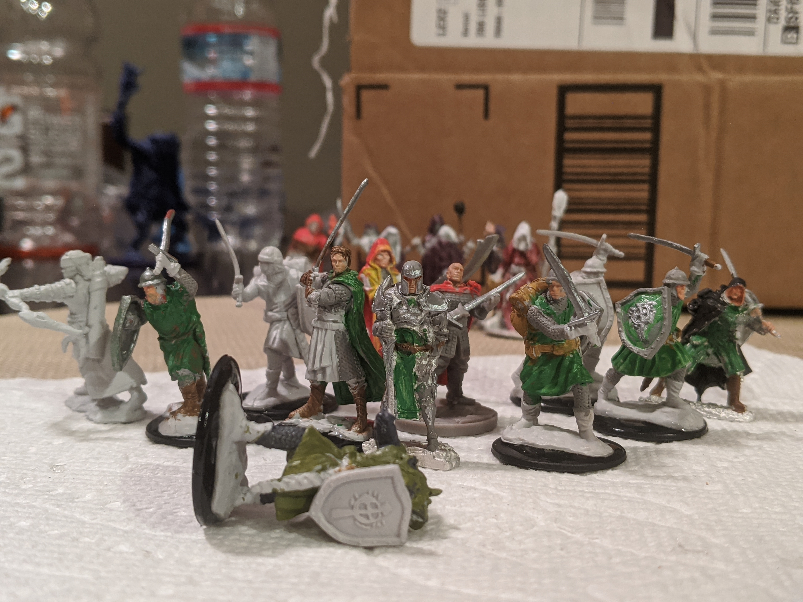Amist starting a in-person game, I decided to take up miniature collecting and painting for fun.
Here is my little militia for the town of Rateduza.
In the background you can see a group of cultists that threaten the town.
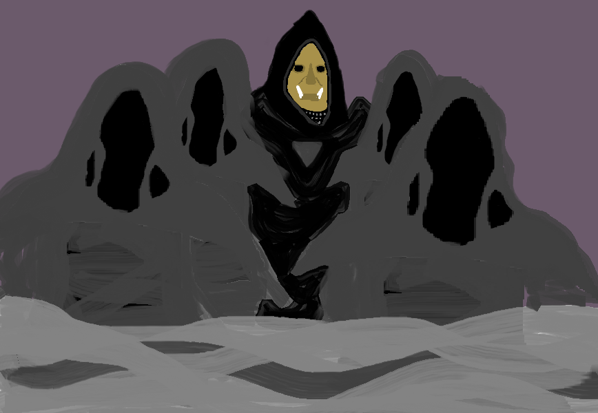An artsy rendition in MS paint of Gorgosh, the Dark Herold of Therizdun and leader of this cult.
Playing video games
Another hobby I enjoy is playing games, with several defining my childhood.
Highlights include:
Classic World of Warcraft
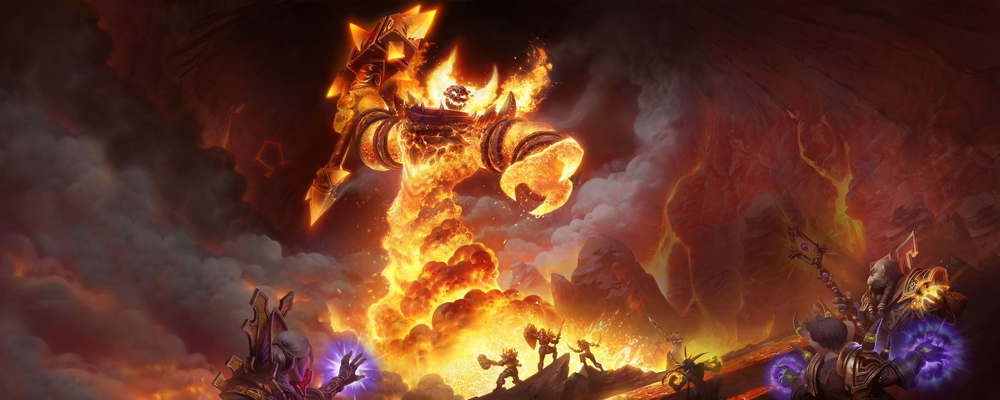
World of Warcraft

Warcraft 3

The Witcher Series
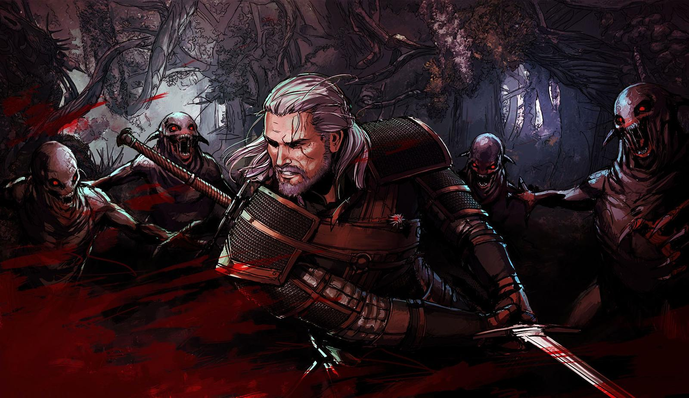
Mount and Blade
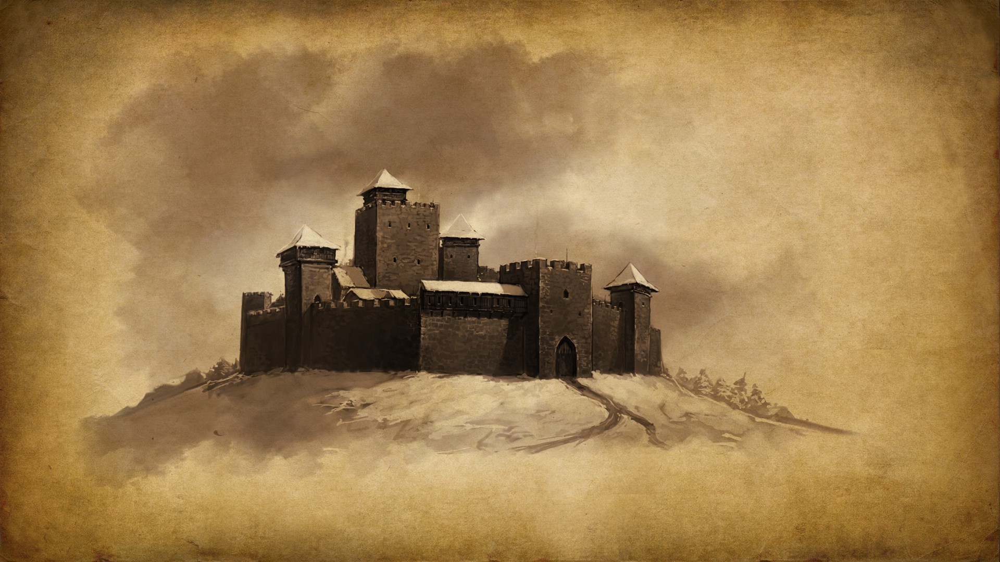
Sly Cooper Series
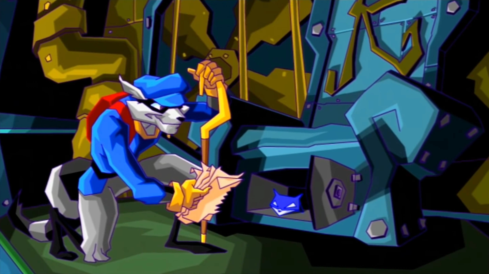
Jax and Dexter Series

Hat in Time
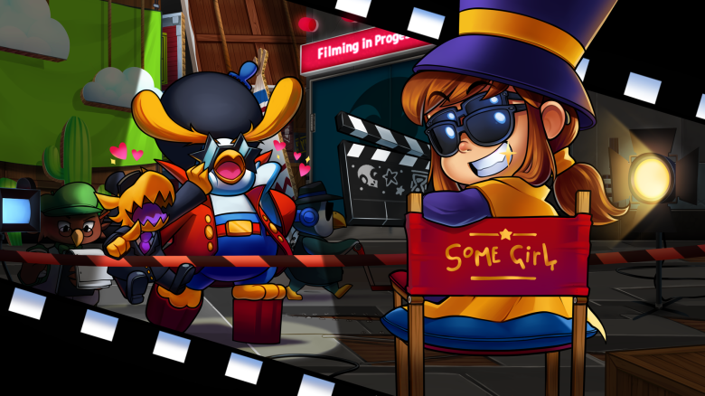
Game: Astroneer

Banjo Kazooie

Another hobby I enjoy is playing games, with several defining my childhood.
Highlights include:
Classic World of Warcraft
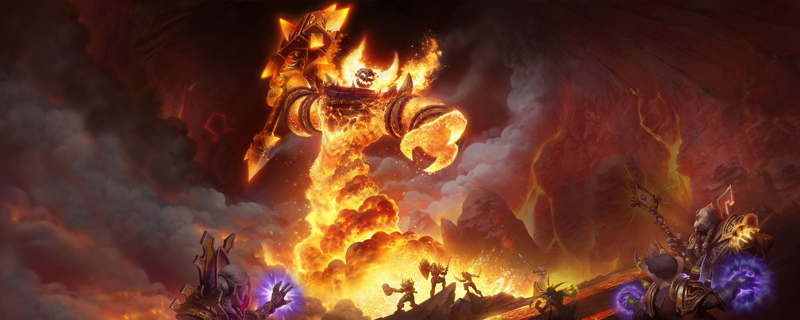World of Warcraft
Warcraft 3
The Witcher Series
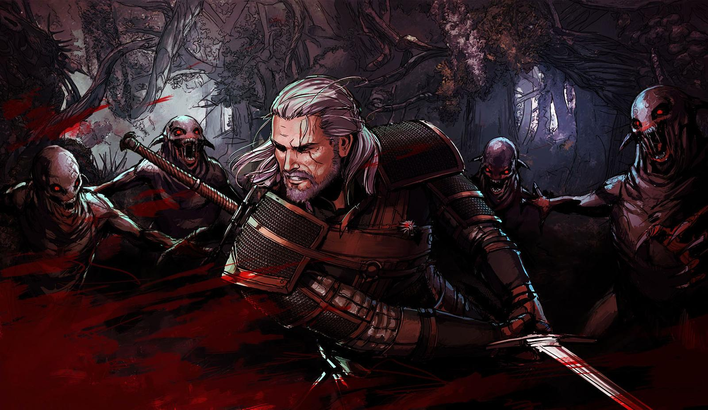Mount and Blade
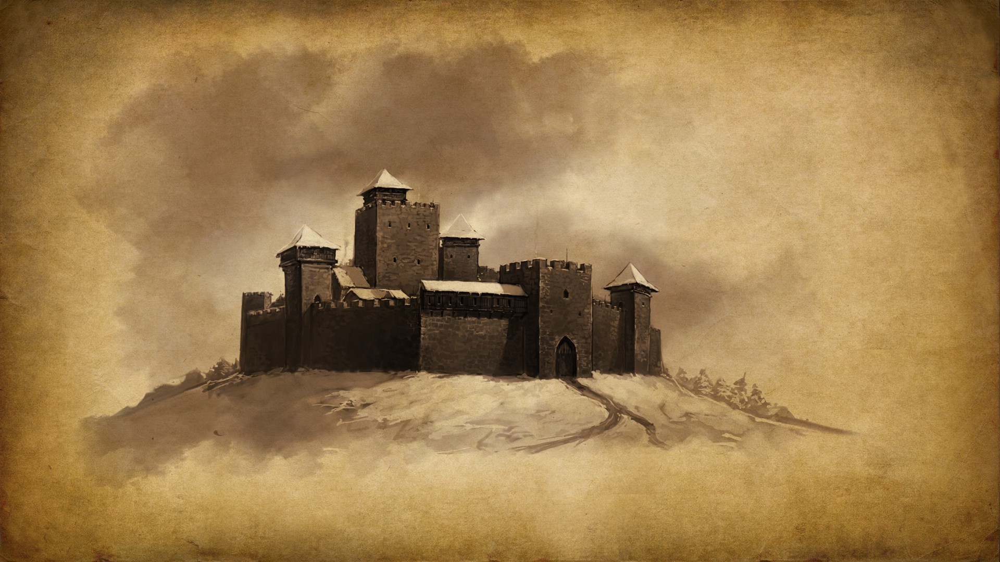Sly Cooper Series
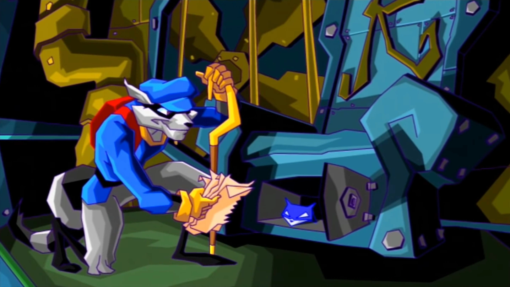Jax and Dexter Series
Hat in Time
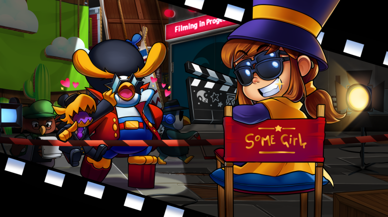Game: Astroneer
Banjo Kazooie